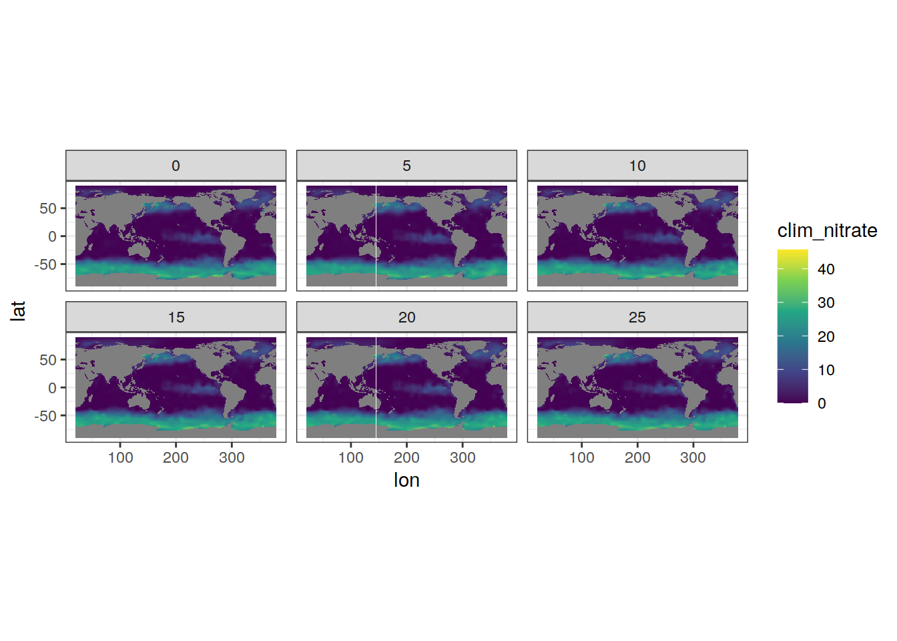
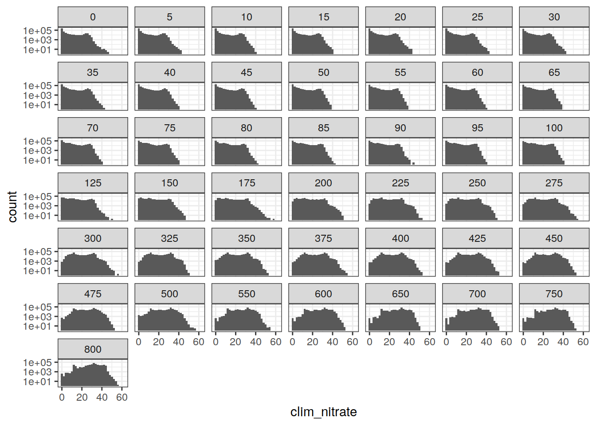

Last updated: 2023-12-19
Checks: 7 0
Knit directory:
bgc_argo_r_argodata/analysis/
This reproducible R Markdown analysis was created with workflowr (version 1.7.0). The Checks tab describes the reproducibility checks that were applied when the results were created. The Past versions tab lists the development history.
Great! Since the R Markdown file has been committed to the Git repository, you know the exact version of the code that produced these results.
Great job! The global environment was empty. Objects defined in the global environment can affect the analysis in your R Markdown file in unknown ways. For reproduciblity it’s best to always run the code in an empty environment.
The command set.seed(20211008) was run prior to running
the code in the R Markdown file. Setting a seed ensures that any results
that rely on randomness, e.g. subsampling or permutations, are
reproducible.
Great job! Recording the operating system, R version, and package versions is critical for reproducibility.
Nice! There were no cached chunks for this analysis, so you can be confident that you successfully produced the results during this run.
Great job! Using relative paths to the files within your workflowr project makes it easier to run your code on other machines.
Great! You are using Git for version control. Tracking code development and connecting the code version to the results is critical for reproducibility.
The results in this page were generated with repository version f895ac9. See the Past versions tab to see a history of the changes made to the R Markdown and HTML files.
Note that you need to be careful to ensure that all relevant files for
the analysis have been committed to Git prior to generating the results
(you can use wflow_publish or
wflow_git_commit). workflowr only checks the R Markdown
file, but you know if there are other scripts or data files that it
depends on. Below is the status of the Git repository when the results
were generated:
Ignored files:
Ignored: .Rhistory
Ignored: .Rproj.user/
Ignored: output/
Unstaged changes:
Modified: code/start_background_job.R
Note that any generated files, e.g. HTML, png, CSS, etc., are not included in this status report because it is ok for generated content to have uncommitted changes.
These are the previous versions of the repository in which changes were
made to the R Markdown (analysis/load_clim_nitrate_woa.Rmd)
and HTML (docs/load_clim_nitrate_woa.html) files. If you’ve
configured a remote Git repository (see ?wflow_git_remote),
click on the hyperlinks in the table below to view the files as they
were in that past version.
| File | Version | Author | Date | Message |
|---|---|---|---|---|
| html | fa6cf38 | ds2n19 | 2023-12-14 | Build site. |
| Rmd | 64fd104 | ds2n19 | 2023-12-14 | revised coverage analysis and SO focused cluster analysis. |
This script loads the nitrate climatology as described in Garcia et al. (2018). The climatology netCDF has previously been downloaded. The lat and lon fields are harmonised to our requirements, i.e -89.5 ≥ lat ≤ 89.5 and 20.5 ≥ lon ≤ 379.5.
Garcia, H. E., K. Weathers, C. R. Paver, I. Smolyar, T. P. Boyer, R. A. Locarnini, M. M. Zweng, A. V. Mishonov, O. K. Baranova, D. Seidov, and J. R. Reagan, 2018. World Ocean Atlas 2018, Volume 4: Dissolved Inorganic Nutrients (phosphate, nitrate and nitrate+nitrite, silicate). A. Mishonov Technical Ed.; NOAA Atlas NESDIS 84, 35pp.
WOA nitrate climatology - /nfs/kryo/work/datasets/gridded/ocean/interior/observation/woa/2018/nitrate/all/1.00/woa18_all_n01_01.nc
woa_nitrate_clim.rds
library(tidyverse)── Attaching packages ─────────────────────────────────────── tidyverse 1.3.2 ──
✔ ggplot2 3.4.4 ✔ purrr 1.0.2
✔ tibble 3.2.1 ✔ dplyr 1.1.3
✔ tidyr 1.3.0 ✔ stringr 1.5.0
✔ readr 2.1.3 ✔ forcats 0.5.2
── Conflicts ────────────────────────────────────────── tidyverse_conflicts() ──
✖ dplyr::filter() masks stats::filter()
✖ dplyr::lag() masks stats::lag()#library(ggOceanMaps)
library(oce)Loading required package: gsw#library(ncdf4)
library(stars)Loading required package: abind
Loading required package: sf
Linking to GEOS 3.11.1, GDAL 3.4.1, PROJ 7.2.1; sf_use_s2() is TRUE
WARNING: different compile-time and runtime versions for GEOS found:
Linked against: 3.11.1-CAPI-1.17.1 compiled against: 3.9.1-CAPI-1.14.2
It is probably a good idea to reinstall sf, and maybe rgeos and rgdal toopath_argo <- '/nfs/kryo/work/datasets/ungridded/3d/ocean/floats/bgc_argo'
path_argo_preprocessed <- paste0(path_argo, "/preprocessed_bgc_data")
path_WOA_nitrate <-"/nfs/kryo/work/datasets/gridded/ocean/interior/observation/woa/2018/nitrate/all/1.00"
# monthly files of the form woa18_all_nMM_01.nc where MM = 01,....12
theme_set(theme_bw())for (i_month in 1:12) {
fn_WOA_nitrate <- paste0(path_WOA_nitrate, "/woa18_all_n", formatC(i_month, width=2, flag="0"), "_01.nc")
nc_nitrate_mean <- read_ncdf(fn_WOA_nitrate, var = c("n_an")) %>%
as_tibble() %>%
select(-time)
# harmonise data
if (!exists("clim_argo_nitrate")) {
clim_argo_nitrate <- nc_nitrate_mean %>%
rename(clim_nitrate = "n_an") %>%
mutate(month = i_month,
lon = if_else(lon < 20, lon + 360, lon))
} else {
clim_argo_nitrate <- rbind(
clim_argo_nitrate,
nc_nitrate_mean %>%
rename(clim_nitrate = "n_an") %>%
mutate(month = i_month,
lon = if_else(lon < 20, lon + 360, lon))
)
}
}Will return stars object with 2786400 cells.Warning: ignoring unrecognized unit: micromoles_per_kilogramWarning in .get_nc_dimensions(dimensions, coord_var = all_coord_var, coords =
coords, : bounds not enveloping depth coordinates. Ignoring.Warning in CPL_crs_from_input(x): GDAL Error 1: PROJ: proj_create: Error -7
(unknown unit conversion id)Warning in value[[3L]](cond): failed to create crs based on grid mapping
and coordinate variable units. Will return NULL crs.
Original error:
Error in st_crs.character(base_gm): invalid crs: +proj=longlat +a=6378137 +f=0.0033528105624174 +pm=0 +no_defs +units=degreesWill return stars object with 2786400 cells.Warning: ignoring unrecognized unit: micromoles_per_kilogramWarning in .get_nc_dimensions(dimensions, coord_var = all_coord_var, coords =
coords, : bounds not enveloping depth coordinates. Ignoring.Warning in CPL_crs_from_input(x): GDAL Error 1: PROJ: proj_create: Error -7
(unknown unit conversion id)Warning in value[[3L]](cond): failed to create crs based on grid mapping
and coordinate variable units. Will return NULL crs.
Original error:
Error in st_crs.character(base_gm): invalid crs: +proj=longlat +a=6378137 +f=0.0033528105624174 +pm=0 +no_defs +units=degreesWill return stars object with 2786400 cells.Warning: ignoring unrecognized unit: micromoles_per_kilogramWarning in .get_nc_dimensions(dimensions, coord_var = all_coord_var, coords =
coords, : bounds not enveloping depth coordinates. Ignoring.Warning in CPL_crs_from_input(x): GDAL Error 1: PROJ: proj_create: Error -7
(unknown unit conversion id)Warning in value[[3L]](cond): failed to create crs based on grid mapping
and coordinate variable units. Will return NULL crs.
Original error:
Error in st_crs.character(base_gm): invalid crs: +proj=longlat +a=6378137 +f=0.0033528105624174 +pm=0 +no_defs +units=degreesWill return stars object with 2786400 cells.Warning: ignoring unrecognized unit: micromoles_per_kilogramWarning in .get_nc_dimensions(dimensions, coord_var = all_coord_var, coords =
coords, : bounds not enveloping depth coordinates. Ignoring.Warning in CPL_crs_from_input(x): GDAL Error 1: PROJ: proj_create: Error -7
(unknown unit conversion id)Warning in value[[3L]](cond): failed to create crs based on grid mapping
and coordinate variable units. Will return NULL crs.
Original error:
Error in st_crs.character(base_gm): invalid crs: +proj=longlat +a=6378137 +f=0.0033528105624174 +pm=0 +no_defs +units=degreesWill return stars object with 2786400 cells.Warning: ignoring unrecognized unit: micromoles_per_kilogramWarning in .get_nc_dimensions(dimensions, coord_var = all_coord_var, coords =
coords, : bounds not enveloping depth coordinates. Ignoring.Warning in CPL_crs_from_input(x): GDAL Error 1: PROJ: proj_create: Error -7
(unknown unit conversion id)Warning in value[[3L]](cond): failed to create crs based on grid mapping
and coordinate variable units. Will return NULL crs.
Original error:
Error in st_crs.character(base_gm): invalid crs: +proj=longlat +a=6378137 +f=0.0033528105624174 +pm=0 +no_defs +units=degreesWill return stars object with 2786400 cells.Warning: ignoring unrecognized unit: micromoles_per_kilogramWarning in .get_nc_dimensions(dimensions, coord_var = all_coord_var, coords =
coords, : bounds not enveloping depth coordinates. Ignoring.Warning in CPL_crs_from_input(x): GDAL Error 1: PROJ: proj_create: Error -7
(unknown unit conversion id)Warning in value[[3L]](cond): failed to create crs based on grid mapping
and coordinate variable units. Will return NULL crs.
Original error:
Error in st_crs.character(base_gm): invalid crs: +proj=longlat +a=6378137 +f=0.0033528105624174 +pm=0 +no_defs +units=degreesWill return stars object with 2786400 cells.Warning: ignoring unrecognized unit: micromoles_per_kilogramWarning in .get_nc_dimensions(dimensions, coord_var = all_coord_var, coords =
coords, : bounds not enveloping depth coordinates. Ignoring.Warning in CPL_crs_from_input(x): GDAL Error 1: PROJ: proj_create: Error -7
(unknown unit conversion id)Warning in value[[3L]](cond): failed to create crs based on grid mapping
and coordinate variable units. Will return NULL crs.
Original error:
Error in st_crs.character(base_gm): invalid crs: +proj=longlat +a=6378137 +f=0.0033528105624174 +pm=0 +no_defs +units=degreesWill return stars object with 2786400 cells.Warning: ignoring unrecognized unit: micromoles_per_kilogramWarning in .get_nc_dimensions(dimensions, coord_var = all_coord_var, coords =
coords, : bounds not enveloping depth coordinates. Ignoring.Warning in CPL_crs_from_input(x): GDAL Error 1: PROJ: proj_create: Error -7
(unknown unit conversion id)Warning in value[[3L]](cond): failed to create crs based on grid mapping
and coordinate variable units. Will return NULL crs.
Original error:
Error in st_crs.character(base_gm): invalid crs: +proj=longlat +a=6378137 +f=0.0033528105624174 +pm=0 +no_defs +units=degreesWill return stars object with 2786400 cells.Warning: ignoring unrecognized unit: micromoles_per_kilogramWarning in .get_nc_dimensions(dimensions, coord_var = all_coord_var, coords =
coords, : bounds not enveloping depth coordinates. Ignoring.Warning in CPL_crs_from_input(x): GDAL Error 1: PROJ: proj_create: Error -7
(unknown unit conversion id)Warning in value[[3L]](cond): failed to create crs based on grid mapping
and coordinate variable units. Will return NULL crs.
Original error:
Error in st_crs.character(base_gm): invalid crs: +proj=longlat +a=6378137 +f=0.0033528105624174 +pm=0 +no_defs +units=degreesWill return stars object with 2786400 cells.Warning: ignoring unrecognized unit: micromoles_per_kilogramWarning in .get_nc_dimensions(dimensions, coord_var = all_coord_var, coords =
coords, : bounds not enveloping depth coordinates. Ignoring.Warning in CPL_crs_from_input(x): GDAL Error 1: PROJ: proj_create: Error -7
(unknown unit conversion id)Warning in value[[3L]](cond): failed to create crs based on grid mapping
and coordinate variable units. Will return NULL crs.
Original error:
Error in st_crs.character(base_gm): invalid crs: +proj=longlat +a=6378137 +f=0.0033528105624174 +pm=0 +no_defs +units=degreesWill return stars object with 2786400 cells.Warning: ignoring unrecognized unit: micromoles_per_kilogramWarning in .get_nc_dimensions(dimensions, coord_var = all_coord_var, coords =
coords, : bounds not enveloping depth coordinates. Ignoring.Warning in CPL_crs_from_input(x): GDAL Error 1: PROJ: proj_create: Error -7
(unknown unit conversion id)Warning in value[[3L]](cond): failed to create crs based on grid mapping
and coordinate variable units. Will return NULL crs.
Original error:
Error in st_crs.character(base_gm): invalid crs: +proj=longlat +a=6378137 +f=0.0033528105624174 +pm=0 +no_defs +units=degreesWill return stars object with 2786400 cells.Warning: ignoring unrecognized unit: micromoles_per_kilogramWarning in .get_nc_dimensions(dimensions, coord_var = all_coord_var, coords =
coords, : bounds not enveloping depth coordinates. Ignoring.Warning in CPL_crs_from_input(x): GDAL Error 1: PROJ: proj_create: Error -7
(unknown unit conversion id)Warning in value[[3L]](cond): failed to create crs based on grid mapping
and coordinate variable units. Will return NULL crs.
Original error:
Error in st_crs.character(base_gm): invalid crs: +proj=longlat +a=6378137 +f=0.0033528105624174 +pm=0 +no_defs +units=degreesclim_argo_nitrate %>%
filter(depth < 30) %>%
ggplot() +
geom_tile(aes(lon, lat, fill = clim_nitrate)) +
facet_wrap(~depth) +
scale_fill_viridis_c() +
coord_quickmap()
| Version | Author | Date |
|---|---|---|
| fa6cf38 | ds2n19 | 2023-12-14 |
clim_argo_nitrate %>%
ggplot(aes(clim_nitrate)) +
geom_histogram(binwidth = 2) +
facet_wrap(~depth) +
scale_y_log10()Warning: Removed 13272396 rows containing non-finite values (`stat_bin()`).Warning: Transformation introduced infinite values in continuous y-axisWarning: Removed 309 rows containing missing values (`geom_bar()`).
| Version | Author | Date |
|---|---|---|
| fa6cf38 | ds2n19 | 2023-12-14 |
clim_argo_nitrate %>%
drop_na() %>%
write_rds(file = paste0(path_argo_preprocessed, "/woa_nitrate_clim.rds"))
sessionInfo()R version 4.2.2 (2022-10-31)
Platform: x86_64-pc-linux-gnu (64-bit)
Running under: openSUSE Leap 15.5
Matrix products: default
BLAS: /usr/local/R-4.2.2/lib64/R/lib/libRblas.so
LAPACK: /usr/local/R-4.2.2/lib64/R/lib/libRlapack.so
locale:
[1] LC_CTYPE=en_US.UTF-8 LC_NUMERIC=C
[3] LC_TIME=en_US.UTF-8 LC_COLLATE=en_US.UTF-8
[5] LC_MONETARY=en_US.UTF-8 LC_MESSAGES=en_US.UTF-8
[7] LC_PAPER=en_US.UTF-8 LC_NAME=C
[9] LC_ADDRESS=C LC_TELEPHONE=C
[11] LC_MEASUREMENT=en_US.UTF-8 LC_IDENTIFICATION=C
attached base packages:
[1] stats graphics grDevices utils datasets methods base
other attached packages:
[1] stars_0.6-0 sf_1.0-9 abind_1.4-5 oce_1.7-10
[5] gsw_1.1-1 forcats_0.5.2 stringr_1.5.0 dplyr_1.1.3
[9] purrr_1.0.2 readr_2.1.3 tidyr_1.3.0 tibble_3.2.1
[13] ggplot2_3.4.4 tidyverse_1.3.2
loaded via a namespace (and not attached):
[1] fs_1.5.2 lubridate_1.9.0 httr_1.4.4
[4] rprojroot_2.0.3 tools_4.2.2 backports_1.4.1
[7] bslib_0.4.1 utf8_1.2.2 R6_2.5.1
[10] KernSmooth_2.23-20 DBI_1.1.3 colorspace_2.0-3
[13] withr_2.5.0 tidyselect_1.2.0 compiler_4.2.2
[16] git2r_0.30.1 cli_3.6.1 rvest_1.0.3
[19] RNetCDF_2.6-1 xml2_1.3.3 labeling_0.4.2
[22] sass_0.4.4 scales_1.2.1 classInt_0.4-8
[25] proxy_0.4-27 digest_0.6.30 rmarkdown_2.18
[28] pkgconfig_2.0.3 htmltools_0.5.3 highr_0.9
[31] dbplyr_2.2.1 fastmap_1.1.0 rlang_1.1.1
[34] readxl_1.4.1 rstudioapi_0.15.0 jquerylib_0.1.4
[37] generics_0.1.3 farver_2.1.1 jsonlite_1.8.3
[40] googlesheets4_1.0.1 magrittr_2.0.3 ncmeta_0.3.5
[43] Rcpp_1.0.10 munsell_0.5.0 fansi_1.0.3
[46] lifecycle_1.0.3 stringi_1.7.8 whisker_0.4
[49] yaml_2.3.6 grid_4.2.2 parallel_4.2.2
[52] promises_1.2.0.1 crayon_1.5.2 haven_2.5.1
[55] hms_1.1.2 knitr_1.41 pillar_1.9.0
[58] reprex_2.0.2 glue_1.6.2 evaluate_0.18
[61] modelr_0.1.10 vctrs_0.6.4 tzdb_0.3.0
[64] httpuv_1.6.6 cellranger_1.1.0 gtable_0.3.1
[67] assertthat_0.2.1 cachem_1.0.6 xfun_0.35
[70] lwgeom_0.2-10 broom_1.0.5 e1071_1.7-12
[73] later_1.3.0 class_7.3-20 googledrive_2.0.0
[76] viridisLite_0.4.1 gargle_1.2.1 workflowr_1.7.0
[79] units_0.8-0 timechange_0.1.1 ellipsis_0.3.2